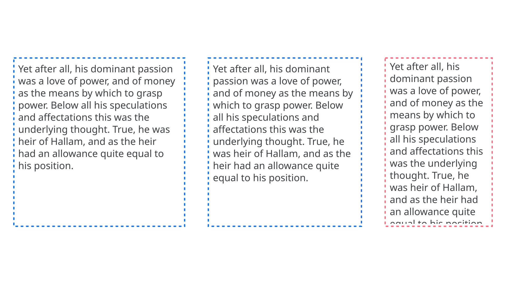

Reflow
By Google Fonts Knowledge contributors · Google Fonts Knowledge.
Original article · Source on GitHub · CC BY-SA 4.0. Text, illustrations and existing credits reproduced from the licensed Knowledge repository. Open Shelf adapted the layout and links; these adaptations are also CC BY-SA 4.0. No endorsement implied.
When a typographic change is made to text—such as increasing the font size, switching to a different weight, or moving to an entirely new font—it’s likely the lines of type will re-flow; that is, words that were set on one line prior to the change may then move to the line above or below.
In print, when a document has already been edited and designed, reflow can be problematic, such as text being cropped from the page when it no longer fits in its containing block.

On the web and on screens in general, designers tend not to be strict about reflow, because they’re targeting a wide variety of viewports, and it’s the viewport that determines how many words appear per line. This can lead to problems; for instance, a long heading may take up multiple lines on a mobile device, causing the reader to scroll in order to see the body of the content.
Generally speaking, good typographic practice should allow for reflow and optimize the layout with responsive design methods.